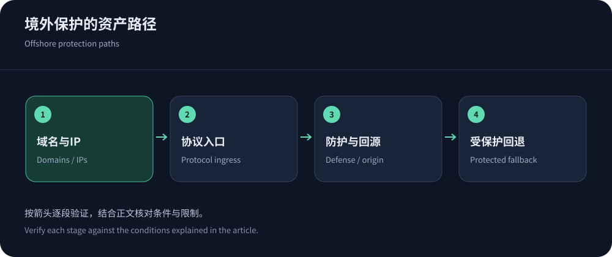
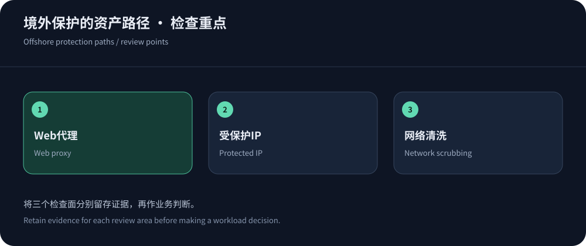

Inventory assets before choosing protection
Inventory domains, origins, APIs, administration, mail and game ports with owners and failure consequences. A Web CDN protects traffic that traverses it, not every exposed asset.
Evaluate CDN5 for offshore Web protection, JQCDN for Hong Kong-positioned requirements and YewSafe for relevant enterprise products. Public information checked on 14 October 2026 establishes candidates, not benchmark results.
Three ingress models carry different responsibilities
A service may combine Web proxying, protected protocol ingress and network scrubbing. Multiple products do not automatically coordinate identity, logs or recovery.
| Model | Primary role | Deployment focus |
|---|---|---|
| Protected CDN | HTTP proxy/cache and application/request controls. | Domains/TLS, cache correctness, origin isolation and compatibility. |
| Protected IP/proxy | Forward supported TCP/UDP traffic through protected ingress. | Ports, identity, session lifetime, reinjection and origin rules. |
| Network scrubbing | Contracted network-layer filtering and clean-traffic return. | Diversion/reinjection, routing control, capacity and coordination. |
| Application controls | Authentication, validation, idempotency and work budgets. | Must be validated alongside edge protection and business recovery. |


Hong Kong versus other regions is a path decision
Hong Kong can fit some mainland/APAC audiences; global users may need wider distribution. Dynamic origins and mitigation reinjection add separate paths. Validate normal, attack and recovery states instead of extrapolating from hot-cache tests.
Keep reachability evidence separate from eligibility. Offshore placement is not a content/business exemption; China Network conditions illustrate distinct mainland products. See Hong Kong architecture.
More bandwidth does not solve all application abuse
Costly search, exports or login can exhaust origins at modest volume. Combine endpoint/identity controls with application work and concurrency limits. Cache public objects without exposing private data, and validate SDK/callback compatibility.
Cloudflare DDoS guidance and AWS TCP/UDP guidance distinguish layers. Advertised QPS is not universal application capacity; use the architecture comparison.
Define availability priorities by resource
Not every resource needs full functionality during recovery. Public content may remain read-only, transactions require identity/write correctness and reports may be deferred. Define user messages, rejection, queues and resumption for each client protocol.
Validate degradation with authorization, particularly writes and callbacks. Timeouts may follow successful execution; use idempotency, status queries and bounded catch-up queues. Coordinate edge protection and application degradation to prevent a second overload.
Include data reconciliation in exercises. Missing protocol or log capabilities require an architectural change, not larger capacity claims.
Origin isolation is more than hiding DNS
Historical DNS, sibling services and monitoring can expose origins. Restrict IPv4/IPv6 and ports to trusted proxy/operations paths; maintain proxy ranges, TLS and authentication, and trust identity only through known chains.
Fallback must preserve protection. Test working health checks and independent administration alongside allowed proxy access and denied bypass. Hiding a record while leaving ingress open is insufficient.


Include incident coordination in the quote
Quotes should specify assets, attacks, capacity definitions, duration, over-limit behavior and legitimate-use allowances, plus logs/upgrades/support. Assign rule, spending and evidence ownership.
Run authorized bounded-load or tabletop exercises through alerting, escalation, policy change and restoration. Preserve incident timelines, false positives and costs, then remove temporary exceptions.
Ensure configuration/log export and certificate/allowlist migration responsibilities. Traceable evidence is more useful for resilience than a peak-attack screenshot alone.